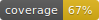
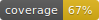
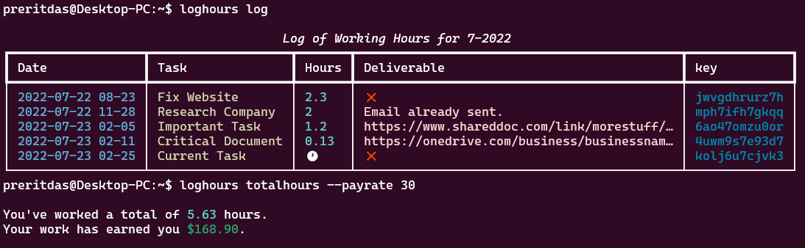
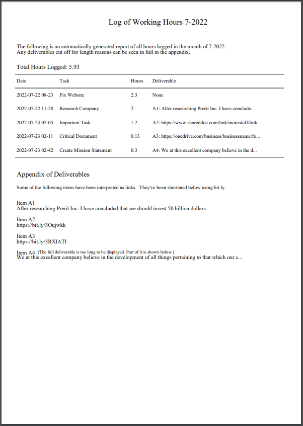

Welcome to the Working Hours CLI docs.
Usage and Guides
 



Working Hours CLI
An extremely simple-to-use command-line interface built to remove the stress of logging working hours, keeping track of completed payable tasks, and referencing deliverables. Simply clockin to your task, complete it, and clockout, and the rest is taken care of. Of course, that’s just the bare-bones functionality… A heap of features await you.

Now with support for auto-generated PDF reports!

See the CLI in action…

Deployment
I deployed the CLI above using a script called loghours…
#!/bin/bash
python3.10 "/home/path/to/Working Hours CLI/main.py" "$@"
I then added the script’s directory to $PATH and gave it executable permissions with chmod +x loghours. This allows me to call it like a professional CLI application from anywhere in the system, with the loghours command. All arguments passed to loghours, such as loghours clockin "this or that" --hours 2, are passed individually to the Python script thanks to the script above.
Usage and Behavior
The CLI interacts with a Deta database whose credentials are supplied by a project key provided in keys.ini (see keys (sample).ini), in the same directory as main.py.
A separate database is automatically created and used for every month. This allows you to generate PDF reports for any current or historical month.
Whenever a new item is added to the database, using clockin, the item is assigned a unique random string key. If you try to run a command (ex. deliverable "a task" to view the deliverable of task “a task,” and there are multiple tasks named “a task,” the CLI will print all items (including their keys) and prompt you to rerun the command but append --key KEY, where KEY is the key printed beside the name of an item.
In the specific circumstance that you’re clocking out of a task whose name is shared by other tasks, if only one occurrence of all the tasks with that name is unfinished, you’ll automatically be clocked out of that unfinished task, without the need for manually providing a key as explained above.
Similarly, if you try to add a delivery to a duplicate task, if only one of the duplicates is incomplete (hasn’t been clocked out), instead of prompting you to provide a key, it’ll deliver to that task automatically.
Smart Title Capitalization
If enabled in config.ini, the Working Hours CLI will use CapitalizeMyTitle’s API to properly capitalize task names. For example, instead of converting “this and that” to “This And That”, it will use “This and That”, in accordance with proper APA capitalization rules. This requires a (free) RapidAPI API key, with a free subscription to the CapitalizeMyTitle app. If this feature is disabled in config.ini, blind capitalization is used instead, as normal (unless you explicitly set titlecase False in your command, as noted in the commands section below).
Commands
The following is a list of all commands with their behavior summarized.
Command |
Behavior |
|---|---|
clockin |
Create a new task and clock in. |
clockout |
Clock out of an unfinished task. |
deliver |
Stores a deliverable item after you’ve clocked out. |
deliverable |
View a tasks’s deliverable. |
export |
Create a PDF report of the provided month’s work log. |
log |
Displays a full log of all work hours. |
modify |
Change an attribute of a logged item. |
pickup |
Continue working on a pre-existing task. |
previewmonth |
Displays all tasks of a given month. |
removetask |
Removes task with |
totalhours |
Calculates the total hours worked on all tasks. |
clockin
Create a new task and clock in.
If you provide hours, the task will be marked as completed with hours hours. The date will be set to hours hours before the current moment, as if you forgot to clock in then and are doing so after the fact.
If you provide date, you will override the date calculations and forcibly insert date. The only reason to do this is if you’re working on a task currently and forgot to clock in when you started. You can clock in, pass in the properly formatted date representing the time you started, and then clock out whenever you’re finished.
If you set titlecase as False, it becomes harder to reference the task in future commands. For example, if you create a task with the name “hEllo” and try to execute deliver "hello" "deliverable", you’ll get an error. If “hEllo” was instead automatically or manually set as “Hello”, the previous command would work.
Option |
Type |
Note |
|---|---|---|
–hours |
float |
Log a completed task that took this many hours. |
–date |
string |
Force date. Use this is if you started but forgot to clock in. |
–titlecase |
bool |
Override auto titlecasing. Makes future reference harder. |
clockout
Clock out of an unfinished task.
Does not work on finished tasks; i.e. tasks with a finite Hours value. Therefore, does not accept a positional ‘task’ parameter like most other commands. This command can only be used to clock out of the single unfinished task, if it exists (you cannot have multiple unfinished tasks in the log).
Deliver a task directly while clocking out with –deliver. If you use –hours, the hours value provided is used instead of a standard calculation involving the current time.
Option |
Type |
Note |
|---|---|---|
–key |
string |
Unique database key, for use if prompted by CLI. |
–hours |
float |
Force the number of hours worked. |
–deliver |
string |
Add a deliverable item. |
deliver
Stores a deliverable item after you’ve clocked out.
Note that you don’t technically have to clock out to add a deliverable. And, deliverables can also be added directly when clocking out. See clockout --help to learn more.
Option |
Type |
Note |
|---|---|---|
–key |
stirng |
Unique database key, for use if prompted by CLI. |
deliverable
View a task’s deliverable.
If the deliverable is determined to be a link, the link is automatically opened in your default browser.
Option |
Type |
Note |
|---|---|---|
–key |
string |
Unique database key, for use if prompted by CLI. |
export
Create a PDF report of the provided month’s work log. This is useful for exporting a report of all work completed once the month is over. For example, it’s August 1st and you’d like a report of all the work you completed in July to send to your employer. Execute export 7-2022 and you will have a properly formatted PDF document to forward on.
Exports the provided month’s tasks in PDF and CSV formats. The file is automatically stored in your current directory; i.e. where your terminal/shell is navigated upon executing the command.
Automatically generates an appendix of deliverables that were too long to be fully displayed in the list of tasks. If links were detected, they’re automatically shortened using bitly. Shortened links are then displayed in the appendix.
The required monthyear parameter takes the format “7-2022” where 7 is July and 2022 is the year.
Output files are automatically zipped together into a .zip archive called “Work Log 7-2022.zip” if the month is July, 2022. This is a single file that can be forwarded to anyone. When unzipped, it contains all export files, including the PDF report and CSV full list of all logged tasks.
A sample generated PDF is displayed below.
In case you want all the raw data, a CSV file is automatically exported to the same directory as the PDF file (shell current working directory). This can be opened directly in Excel and either preserved or converted to .xlsx format.
Option |
Type |
Note |
|---|---|---|
monthyear |
string |
Month and year, ex. 7-2022 for July, 2022. |
log
Displays a full log of all work hours.
As each month has a unique database (managed automatically), this is equivalent to running previewmonth with the current month as a parameter.
modify
Change an attribute of a logged item.
Automatically tries to convert the value provided to the appropriate type, depending on the attribute. For example, if the user requests to change the ‘hours’ attribute of an item, the value is automatically converted to a float. If this operation fails, the user is notified that their provided value is unacceptable.
This command is only meant to be used to correct errors. To update the delivery of a task, it is much safer to use the deliver command.
Option |
Type |
Note |
|---|---|---|
task |
string |
The name of the task whose attribute you wish to change. |
item |
string |
The name of the attribute you wish to change. This can be anything in the log, except |
value |
any |
The value you wish to change the task’s attribute to. |
–key |
string |
Unique database key, for use if prompted by CLI. |
pickup
Continue working on a pre-existing task.
Finds a completed task from the database, resets its date to hours hours ago, and removes its hours value to indicate that it’s unfinished. That way you can continue working and clock out as normal. The resulting behavior is that you add on the extra time between when you picked up the task and when you clock out again.
Option |
Type |
Note |
|---|---|---|
–key |
string |
Unique database key, for use if prompted by CLI. |
previewmonth
Displays all tasks of a given month. This is useful when previewing the contents of an export before exporting to a PDF. See the section on export (or run export --help) to learn more about why you’d ever want to do that.
The required monthyear parameter takes the format “7-2022” where 7 is July and 2022 is the year.
Option |
Type |
Note |
|---|---|---|
monthyear |
string |
Month and year, ex. 7-2022 for July, 2022. |
removetasks
Removes task with key.
totalhours
Calculates and displays the total hours worked on all tasks.